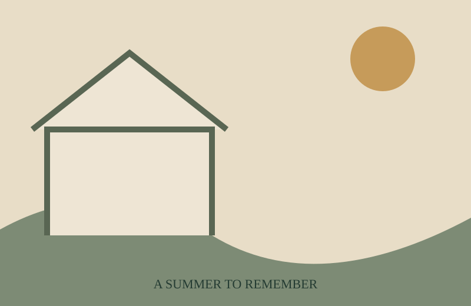

走進古蹟，遇見青春
故事從一段高中暑假的回憶開始。兩位女孩走進臺中的歷史場域，一位對文化與故事充滿好奇，另一位起初興趣缺缺；隨著探索、拍照與相處，她們慢慢發現，值得記住的不只是建築，也是在那段時光裡一起經歷的人。
作品以「文化深耕 × 地方創生」為發想，透過年輕人的視角，讓歷史空間成為能走入、感受並留下個人記憶的地方。

故事從一段高中暑假的回憶開始。兩位女孩走進臺中的歷史場域，一位對文化與故事充滿好奇，另一位起初興趣缺缺；隨著探索、拍照與相處，她們慢慢發現，值得記住的不只是建築，也是在那段時光裡一起經歷的人。
作品以「文化深耕 × 地方創生」為發想，透過年輕人的視角，讓歷史空間成為能走入、感受並留下個人記憶的地方。